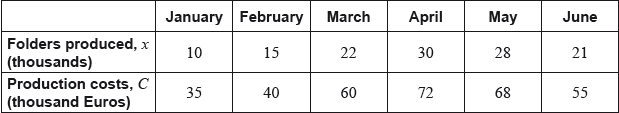

The manager of a folder factory recorded the number of folders produced by the factory (in thousands) and the production costs (in thousand Euros), for six consecutive months.

Every month the factory sells all the folders produced. Each folder is sold for 2.99 Euros.
Draw a scatter diagram for this data. Use a scale of 2 cm for 5000 folders on the horizontal axis and 2 cm for 10 000 Euros on the vertical axis.
Write down, for this set of data the mean number of folders produced, ;
Write down, for this set of data the mean production cost, .
Label the point on the scatter diagram.
Use your graphic display calculator to find the Pearson’s product–moment correlation coefficient, .
State a reason why the regression line on is appropriate to model the relationship between these variables.
Use your graphic display calculator to find the equation of the regression line on .
Draw the regression line on on the scatter diagram.
Use the equation of the regression line to estimate the least number of folders that the factory needs to sell in a month to exceed its production cost for that month.